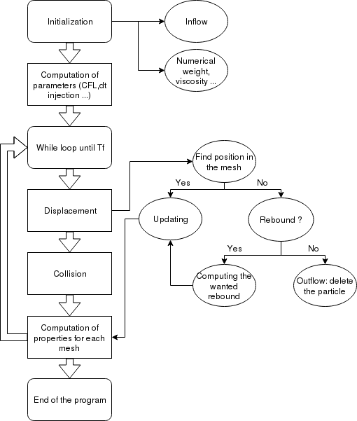

Rentrée atmosphérique d'un objet en raréfié
Présentation du projet

Modèle numérique
Présentation du modèle et de son optimisation
Maillage et nombre d'éléments
Le maillage est cartésien. Dans un premier temps le travaille s'est réalisé sur un maillage contenant 1 131 quadrilatère, puis une fois le code validé les résultats ont été obtenus à partir d'un maillage contenant 10 591 éléments. La complexité du code, bien qu'elle dépendent du nombre de mailles, dépends surtout du nombre de particules présentes dans le domaine. Ainsi nos calculs se sont réalisés sur des domaines contentant jusqu'à 600 000 particules.
Architecture du code
Dans cette partie, la structure globale du code sera présentée de manière simplifiée afin d'en faciliter la compréhension.
Initialisation
Après la lecture du maillage et la construction des différentes classes géométriques (Edges, Quad ...), le programme doit être initialisé. Certains paramètres importants doivent être calculés tels que les surfaces correspondant à chaque maille, les voisins de chaque maille, le poids numérique $\omega_i$, ou encore la viscosité. De plus, le domaine est initialement vide, un "inflow" de particules doit donc être créé une première fois.
Calcul du pas de temps
Afin que le modèle soit stable et cohérent avec la réalité, le pas de temps doit vérifier deux conditions différentes :
-
La condition CFL :
\[dt\leq \frac{1}{2}\frac{dx_{min}}{Ma\sqrt{\gamma R T}}\]
où $dx_{min}$ est la taille de la plus petite arête du maillage, $Ma$ le nombre de Mach, $R$ la constante du gaz et $T$ la température initiale.
Cette condition doit être respectée pour que lors de l'intervalle $dt$, une particule ne parcourt pas en moyenne plus de la moitié de la longueur d'une maille. Afin que cette condition soit largement respectée, il a été choisi de prendre:
\[ dt_{CFL} = \frac{1}{5}\frac{dx_{min}}{Ma\sqrt{\gamma R T}} \]
-
La condition sur les collisions:
\[ \frac{dt}{\tau} \leq 0.1 \]
sachant que le temps caractéristique est obtenu par:
\[ \tau = \frac{\mu(T)}{p}= \frac{\mu(T)}{\rho R T} \]
avec $\mu(T)$ une loi de viscosité dépendant de la température initiale.
Pour l'initialisation, le pas de temps est fixé à:\[ dt_{\tau}=0.1\tau\]
Le pas de temps est ensuite fixé en prenant le minimum des deux $dt$ obtenus:
\[ dt=min(dt_{CFL},dt_{\tau}) \]
Si le minimum des deux est le $dt_{CFL}$, alors le coefficient $\frac{dt}{\tau}$ doit être calculé puis stocké en vu du calcul sur les collisions.
Une fois ce dernier paramètre fixé, le programme peut rentrer dans la boucle en temps.
Calcul des déplacements
Cette fonction calcule, pour chaque particule, les coordonnées de la nouvelle position de celle-ci suite à un déplacement durant un pas de temps $dt$. Par la suite, divers autres fonctions sont appelées afin de mettre à jour la localisation dans le maillage ainsi que, si besoin, les vitesses.
Pour commencer, une première fonction teste si la particule se trouve toujours dans le domaine d'étude. Si elle y est, sa position est mise à jour dans le maillage (la particule est sauvegardée dans la maille correspondante), sinon une deuxième fonction est appelée. Celle-ci permet de vérifier si la particule est sortie du domaine par un bord de condition "outflow" ou si elle devrait rebondir sur le bord de condition de symétrie ou sur le bord de condition "wall" correspondant à la navette. Si la particule est sortie par le bord "outflow", elle est supprimée car elle n'aura plus d'influence sur notre domaine de calcul, sinon, la particule doit rebondir et une troisième fonction est appelée afin de calculer sa nouvelle position et sa nouvelle vitesse. Enfin, sa localisation dans le maillage est mise à jour.
Lors de cette succession d'appel de fonctions, certains cas sont traités différemment et avec plus de précautions. En effet, les mailles possédant deux bords différents présentent des cas différents:
- la maille possédant un bord avec condition de symétrie et un bord avec condition "wall" peut donner lieu à deux rebonds différents pour la particule.
- la maille possédant un bord avec condition de symétrie et un bord avec condition "outflow" peut donner lieu à un rebond et/ou une sortie de la particule.
- la maille possédant un bord avec condition "wall" et un bord avec condition "outflow" peut donner lieu à un rebond et/ou une sortie de la particule.
Pour terminer, le respect de la condition CFL est testé avec chaque vitesse correspondante pour chaque particule. Si jamais elle n'est pas respectée, alors le pas de temps est divisé et les calculs sont réalisé à nouveaux. Cette opération peut avoir lieu jusqu'à dix fois, si jamais la condition n'est toujours pas respectée, la particule est supprimée. Ceci arrive de temps en temps pour des particules avec une vitesse vraiment très élevée (due à la génération de vitesse selon une loi de probabilité).
Collisions
Une fois toutes les positions mise à jour, le programme s'intéresse aux collisions dans chaque maille comme expliqué précédemment. Si jamais une particule collisionne, sa vitesse est mise à jour suivant la maxwellienne autour de la vitesse moyenne dans la maille.
Calcul des paramètres
A la fin de chaque itération, la densité, la vitesse ainsi que la température sont calculés dans chaque maille à l'aide des formules présentées précédemment. De plus, en vu de l'itération suivante, un nouvel "inflow" de particules est créé.
Lorsque le temps final est atteint, c'est la fin du programme.
Optimisation
Séquentielle
La première optimisation à réaliser a été sur le code séquentiel. Pour cela on a tout d'abord cherché à minimiser les stockages au sein du code. L'outil -gprof a été utilisé afin de déterminer quelle fonction du code était le plus chronophage.